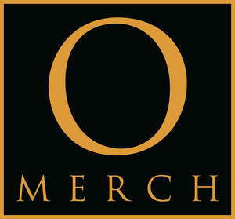

Trade Mark Journal No.2025/034 22 August 2025
UK00004248080 12 August 2025 (25,40)

- Class 25
- T-shirts; Short-sleeved T-shirts; Printed t-shirts; Tee-shirts; Long-sleeved shirts; Short-sleeved shirts; Shirts; Short-sleeve shirts; Dress shirts; Knit shirts; Open-necked shirts; Camouflage shirts; Casual shirts; Sweat shirts; Hooded sweat shirts; Collared shirts; Polo shirts; Sweatshirts; Yoga shirts; Woven shirts; Shorts [clothing]; Sleeveless jerseys; Sweatpants; Shirts and slips; Football shirts; Soccer shirts; Shirt fronts; Golf shirts; Moisture-wicking sports shirts; Fleece shorts; Jeans; Wristbands [clothing]; Pique shirts; V-neck sweaters; Sleep shirts; Sport shirts; Sports shirts; Boy shorts [underwear]; Tennis shirts; Embroidered clothing; Denim pants; Hoodies; Fishing shirts; Denim jeans; Hooded sweatshirts; Under shirts; Rugby shirts; Sports shirts with short sleeves; Leggings [trousers]; Trousers shorts; Shorts; Jerseys [clothing]; Blue jeans; Padded shirts for athletic use; Sleeveless jackets; Tank-tops; Sleeveless pullovers; Sweat shorts; Denims [clothing]; Sweatshorts; Button down shirts; Men's dress socks; Sleeved jackets; Camouflage pants; Beanie hats; Knitted underwear; Gym shorts; Mock turtleneck sweaters; Corduroy pants; Pants; Bandanas; American football shirts; Headbands [clothing]; Headbands for clothing; Moisture-wicking sports pants; Denim jackets; Sweat pants; Swim shorts; Wristbands; Golf shorts; Babies' pants [clothing]; Knitted clothing; Warm-up pants; Underwear; Quilted jackets [clothing]; Stuff jackets [clothing]; Bandanas [neckerchiefs]; Cycling shorts; Men's underwear; Knit jackets; Tracksuit tops.
- Class 40
- T-shirt printing; T-shirt embroidering services; Tee-shirt embroidering services; Imprinting messages on tee-shirts.
Omerch Limited